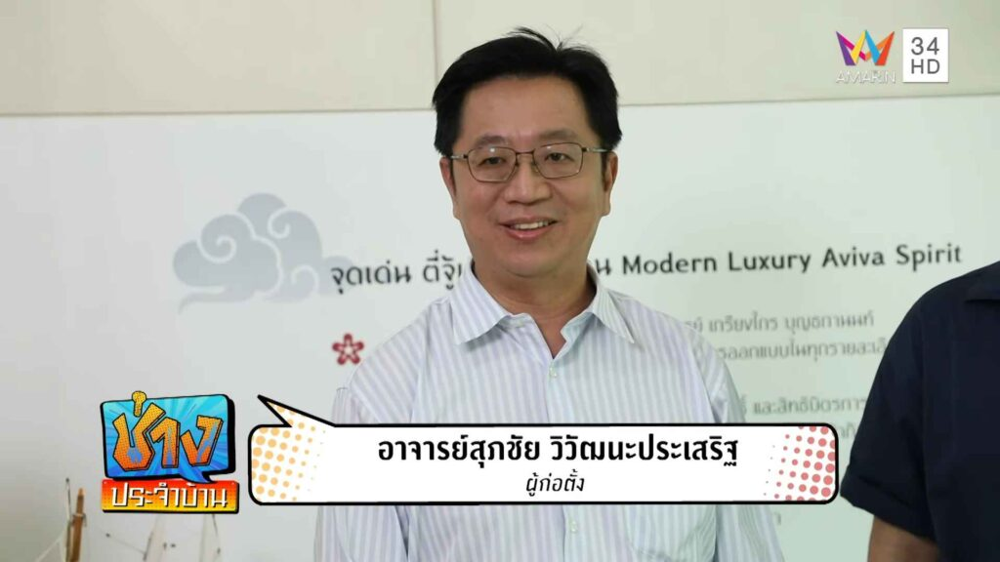

Fengshui Balance
ที่ปรึกษาฮวงจุ้ยสำหรับบ้าน ธุรกิจ และออฟฟิศ

อาจารย์สุภชัย วิวัฒนะประเสริฐ เป็นที่รู้จักในฐานะผู้ก่อตั้ง Fengshui Balance - ฮวงจุ้ย สมดุลแห่งธรรมชาติ และเป็นผู้ให้ความรู้ด้านฮวงจุ้ยที่ประยุกต์หลักวิชาให้เข้ากับบ้าน ออฟฟิศ ร้านค้า โรงงาน และพื้นที่ใช้งานจริง
แนวทางของอาจารย์เน้นการวิเคราะห์ชัยภูมิ ทิศทาง ดวงจีน ฤกษ์ และข้อจำกัดของพื้นที่ เพื่อให้คำปรึกษาฮวงจุ้ยที่ใช้งานได้จริง ไม่ใช่คำแนะนำสำเร็จรูป
Lineage
ศิษย์ของ อาจารย์เกรียงไกร บุญธกานนท์
ข้อมูลจาก Aviva Spirit ระบุว่า อาจารย์สุภชัยเป็นลูกศิษย์ของ อาจารย์เกรียงไกร บุญธกานนท์ ปรมาจารย์ฮวงจุ้ย และประธานชมรมภูมิโหราศาสตร์ โดยศึกษาศาสตร์นี้มาเป็นเวลายาวนาน
สายวิชานี้เป็นส่วนสำคัญของภาพลักษณ์ Fengshui Balance เพราะสะท้อนทั้งความเคารพต่อครู ความเป็นระบบของหลักวิชา และการนำไปใช้กับพื้นที่สมัยใหม่
Keynote Speaker
ว่าด้วยฮวงจุ้ยและงานออกแบบ (ASA Collective Experience)

อาจารย์สุภชัยได้รับเกียรติเป็นวิทยากรบรรยายพิเศษร่วมกับสมาคมสถาปนิกสยาม ในหัวข้อ "ว่าด้วยฮวงจุ้ยและงานออกแบบ" (ASA Collective Experience) เพื่อให้ความรู้ในเชิงการผสมผสานหลักสถาปัตยกรรมและศาสตร์ฮวงจุ้ยเข้าด้วยกันอย่างสร้างสรรค์และลงตัว
Source
แหล่งอ้างอิง
Aviva Spirit: ประวัติ อาจารย์สุภชัย วิวัฒนะประเสริฐ
Fengshui Balance Facebook